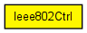

Control structure for communication between LLC and higher layers
The following diagram shows usage relationships between types. Unresolved types are missing from the diagram. Click here to see the full picture.
The following diagram shows inheritance relationships for this type. Unresolved types are missing from the diagram. Click here to see the full picture.
| Name | Type | Description |
|---|---|---|
| ssap | int |
used with IEEE 802 LLC (see EtherFrameWithLLC) |
| dest | MACAddress |
dest MAC address |
| etherType | int |
used with EthernetIIFrame |
| src | MACAddress |
src MAC address (can be left empty when sending) |
| dsap | int |
used with IEEE 802 LLC (see EtherFrameWithLLC) |
| pauseUnits | int |
used with IEEE802CTRL_SENDPAUSE |
| inputPort | int |
convenience field, used between IPv6 and IPv6ND |
// // Control structure for communication between LLC and higher layers // class Ieee802Ctrl { MACAddress src; // src MAC address (can be left empty when sending) MACAddress dest; // dest MAC address int etherType; // used with EthernetIIFrame int ssap; // used with IEEE 802 LLC (see EtherFrameWithLLC) int dsap; // used with IEEE 802 LLC (see EtherFrameWithLLC) int pauseUnits; // used with IEEE802CTRL_SENDPAUSE int inputPort; // convenience field, used between IPv6 and IPv6ND }